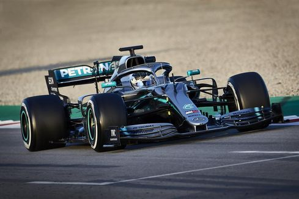

Football.
By - Avneesh Jagtap.

Formula One (also known as Formula 1 or F1) is the highest class of international racing for open-wheel single-seater formula racing cars sanctioned by the Fédération Internationale de l'Automobile (FIA)
Racing
A Formula One Grand Prix event spans a weekend. It begins with two free practice sessions on Friday (except in Monaco, where Friday practices are moved to Thursday), and one free practice on Saturday. Additional drivers (commonly known as third drivers) are allowed to run on Fridays, but only two cars may be used per team, requiring a race driver to give up their seat. A qualifying session is held after the last free practice session. This session determines the starting order for the race on Sunday
History.
The Formula One series originated with the European Championship of Grand Prix motor racing of the 1920s and 1930s. The formula consists of a set of rules that all participants' cars must meet. Formula One was a new formula agreed upon during 1946 with the first non-championship races taking place that year. The first Formula 1 race was the 1946 Turin Grand Prix. A number of Grand Prix racing organisations had laid out rules for a world championship before World War II, but due to the suspension of racing during the conflict, the World Drivers' Championship did not become formalised until 1947. The first world championship race took place at Silverstone in the United Kingdom in 1950. Giuseppe Farina, in his Alfa Romeo, won the first World Championship for Drivers in 1950, narrowly defeating his teammate Juan Manuel Fangio. However, Fangio won the title in 1951, 1954, 1955, 1956, and 1957 (his record of five World Championship titles stood for 45 years until Michael Schumacher took his sixth title in 2003). Fangio's streak was interrupted (after an injury) by two-time champion Alberto Ascari of Ferrari.
Cars and Technology
Modern Formula One cars are mid-engined, hybrid, semi-open cockpit, open-wheel single-seaters. The chassis is made largely of carbon-fibre composites, rendering it light but extremely stiff and strong. The whole car, including the driver but not fuel, weighs only 795 kg (1,753 lb) – the minimum weight set by the regulations. If the construction of the car is lighter than the minimum, it can be ballasted up to add the necessary weight. The race teams take advantage of this by placing this ballast at the extreme bottom of the chassis, thereby locating the centre of gravity as low as possible in order to improve handling and weight transfer. The cornering speed of Formula One cars is largely determined by the aerodynamic downforce that they generate, which pushes the car down onto the track. This is provided by "wings" mounted at the front and rear of the vehicle, and by ground effect created by low air pressure under the flat bottom of the car. The aerodynamic design of the cars is very heavily constrained to limit performance. The previous generation of cars sported a large number of small winglets, "barge boards", and turning vanes designed to closely control the flow of the air over, under, and around the car. The other major factor controlling the cornering speed of the cars is the design of the tyres. From 1998 to 2008, the tyres in Formula One were not "slicks" (tyres with no tread pattern) as in most other circuit racing series. Instead, each tyre had four large circumferential grooves on its surface designed to limit the cornering speed of the cars.[111] Slick tyres returned to Formula One in the 2009 season. Suspension is double wishbone or multilink front and rear, with pushrod operated springs and dampers on the chassis – one exception being that of the 2009 specification Red Bull Racing car (RB5) which used pullrod suspension at the rear, the first car to do so since the Minardi PS01 in 2001. Ferrari used a pullrod suspension at both the front and rear in their 2012 car.[112] Both Ferrari (F138) and McLaren (MP4-28) of the 2013 season used a pullrod suspension at both the front and the rear. In 2022, McLaren (MCL36) and Red Bull Racing (RB18) switched to a pullrod front suspension and push rod rear suspension.